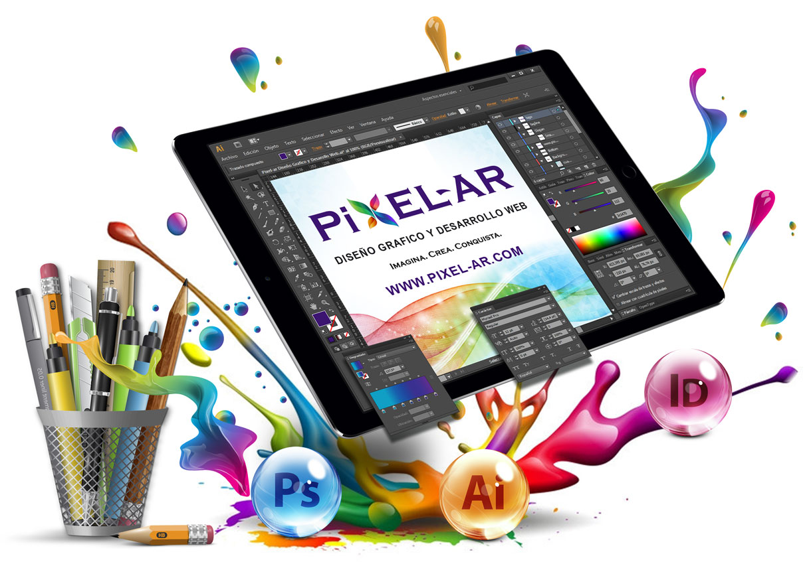
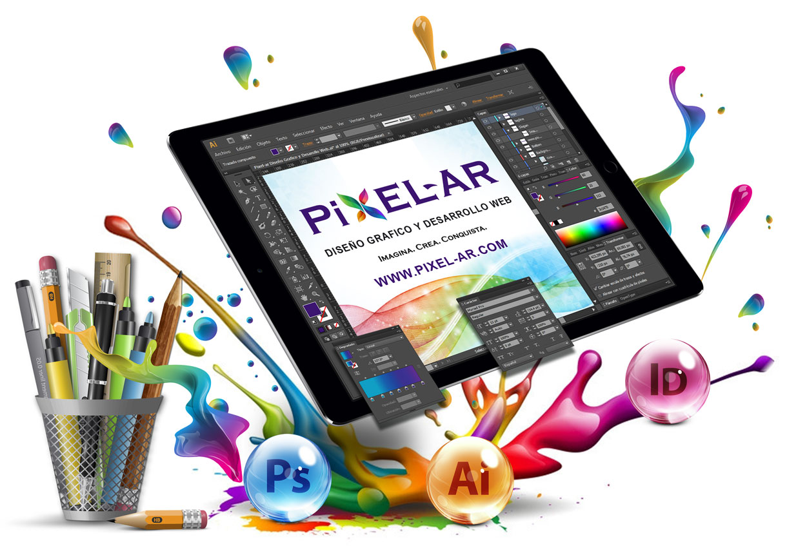
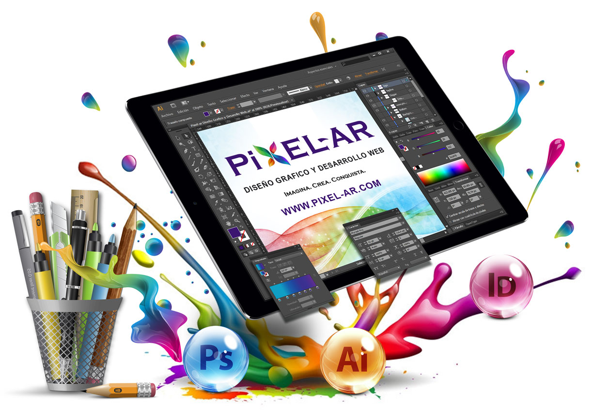
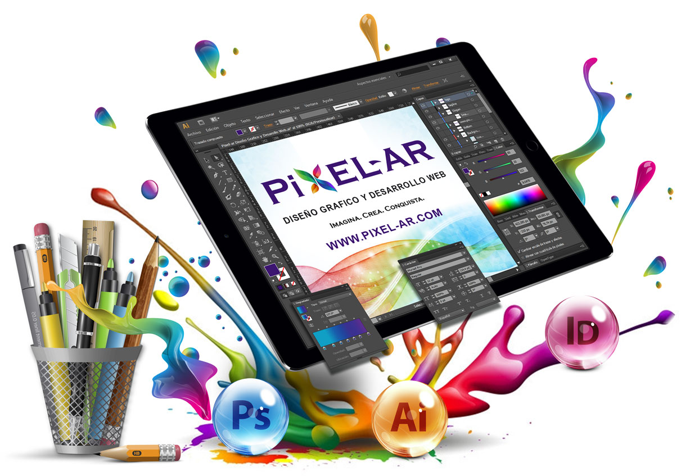

Soy una profesional en Tecnologías de la Información y Comunicación con formación en Diseño Gráfico y especialización en la enseñanza de la programación. Mi enfoque docente busca integrar la creatividad visual con la lógica computacional, fomentando el pensamiento crítico, el aprendizaje significativo y la innovación en el aula. Tengo experiencia en ambientes híbridos y en el desarrollo de recursos digitales para el aprendizaje. Me apasiona guiar a estudiantes en su proceso formativo, impulsando el uso responsable y ético de la tecnología.